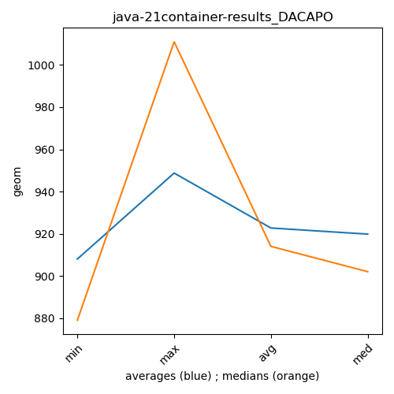

java-21 DACAPO
Context at bottom
/home/jvanek/git/benchmarks-in-nested-virtualisation-toolchain/final_results/container_results/container-results_J2DBENCH
java-21
DACAPO
/home/jvanek/git/benchmarks-in-nested-virtualisation-toolchain/final_results/container_results/container-results_RADARGUNs3
java-21
DACAPO
/home/jvanek/git/benchmarks-in-nested-virtualisation-toolchain/final_results/container_results/container-results_RADARGUNs1
java-21
DACAPO
/home/jvanek/git/benchmarks-in-nested-virtualisation-toolchain/final_results/container_results/container-results_DACAPO
java-21
DACAPO
container-results_DACAPO
final score
Expected number of java-21 JDKs: 7
1st avgmed_alljdks_metric:
/home/jvanek/git/benchmarks-in-nested-virtualisation-toolchain/final_results/result_processing.py /home/jvanek/git/benchmarks-in-nested-virtualisation-toolchain/final_results/container_results/container-results_DACAPO geom False
values: [924, 920, 888, 920, 934, 876, 882, 863, 897, 1022, 1054, 890, 893, 882, 893, 887, 1011, 879, 1018, 902, 963, 878, 1032, 881, 963, 879, 877, 879, 960, 1007, 897, 911, 873, 911]

Expected number of iterations: 5
final number of values: 34 out of 35
Pass rate: 97.1%
values: (863, 1054, 921.9411764705883, 897)

** accuracy from all jdks and runs
more is better
MIN: 863
MAX: 1054
AVG: 921.9411764705883
MED: 897
Relative differences 1:
MIN-MAX: 18.0 %
MIN-AVG: 6.0 %
MIN-MED: 4.0 %
MAX-MIN: -22.0 %
MAX-AVG: -14.0 %
MAX-MED: -18.0 %
AVG-MED: -3.0 %
stored to java-21.properties. sort | uniq that!
2nd avgmed_by_jdk_metric:
values: [917.2, 908.0, 922.4, 948.75, 931.2, 911.6, 919.8]

values: [920, 882, 893, 1011, 902, 879, 911]

values: (908.0, 948.75, 922.7071428571428, 919.8)
values: (879, 1011, 914.0, 902)

** accuracy from all jdks where runs were avged
more is better
MIN: 908.0
MAX: 948.75
AVG: 922.7071428571428
MED: 919.8
Relative differences 1:
MIN-MAX: 4.0 %
MIN-AVG: 2.0 %
MIN-MED: 1.0 %
MAX-MIN: -4.0 %
MAX-AVG: -3.0 %
MAX-MED: -3.0 %
AVG-MED: -0.0 %
stored to java-21.properties. sort | uniq that!
** accuracy from all jdks where runs were medianed
more is better
MIN: 879
MAX: 1011
AVG: 914.0
MED: 902
Relative differences 1:
MIN-MAX: 13.0 %
MIN-AVG: 4.0 %
MIN-MED: 3.0 %
MAX-MIN: -15.0 %
MAX-AVG: -11.0 %
MAX-MED: -12.0 %
AVG-MED: -1.0 %
stored to java-21.properties. sort | uniq that!
/home/jvanek/git/benchmarks-in-nested-virtualisation-toolchain/final_results/container_results/container-results_SPECJBB
java-21
DACAPO
/home/jvanek/git/benchmarks-in-nested-virtualisation-toolchain/final_results/container_results/container-results_JMH
java-21
DACAPO
pass rates:
container-results_DACAPO=97.1%
Context:
- container_results
- DACAPO